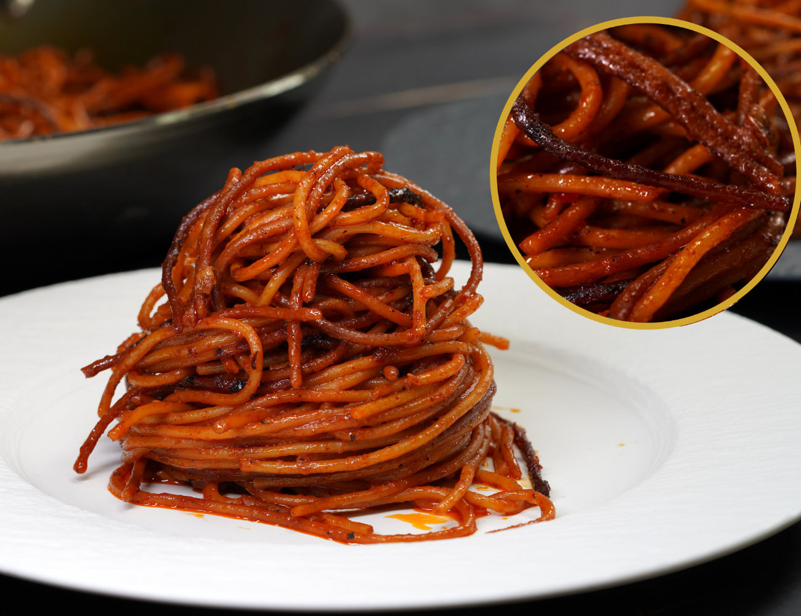

Pasta all'Assassina

Description
This spicy, crispy, flavorful twist of spaghetti will have you dying for
the next pasta night. Best of all, it comes together in one dish!
It is advised that you use a large, shallow frying pan for this. If you
don't have a pan that's at least as wide as a the length of a spaghetti
noodle (extra space is often appreciated as well) then you can
definitely change the noodle type! We've made this successfully with
larger shells, and larger twists!
One reason that we come back to this time and time again is that it
comes together ine one pan in a very short time. You can easily
customize it to fit your tastes and needs while also using some cheaper,
premade ingredients to make a spin on it that is still great and even
easier!
Ingredients
- Spaghetti, 500g. Or an equal amount of the pasta of your choice
- Cherry tomatoes, 500g. Or a can of pasta sauce of your choice.
- Chili, to taste
- Garlic -minced-, to taste
- Olive Oil
- Salt
-
Water or spaghetti sauce, depends on how cripsy/well done you want
your nood's
Steps
-
Put a tablespoon or so of oil into the pan and heat on medium-high
until it shimmers.
- Add the chili to the oil and let it cook for a minute.
-
Add the spaghetti or other noodles to the oil. Mix them around in the
oil the spread the oil around. Add the garlic and tomatoes
-
Once it has fried for a few minutes add a cup or so of water or
spaghetti sauce to mostly cover the noodles. Reduce the heat to
medium. Let this sit for several minutes checking that the bottom is
not burning but the water is cooking off/into the pasta and then the
noodles start to crips a little.
-
Once the first amount of water has been cooked off and the noodles
have had a chance to crips up on the bottom, stir them around and add
more of the liquid. Repeat this process until your noodles are cooked
to your preferred style and that there are several sections of noodles
that have fried on the bottom and become crispy. Season with salt.